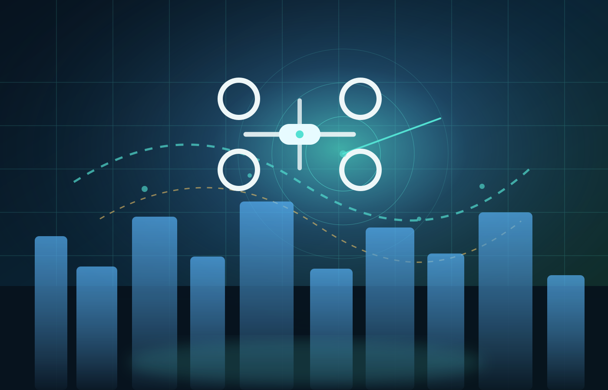
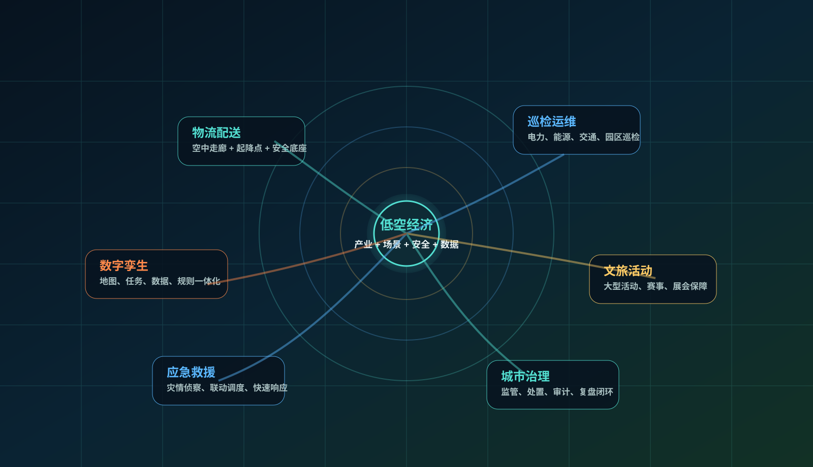
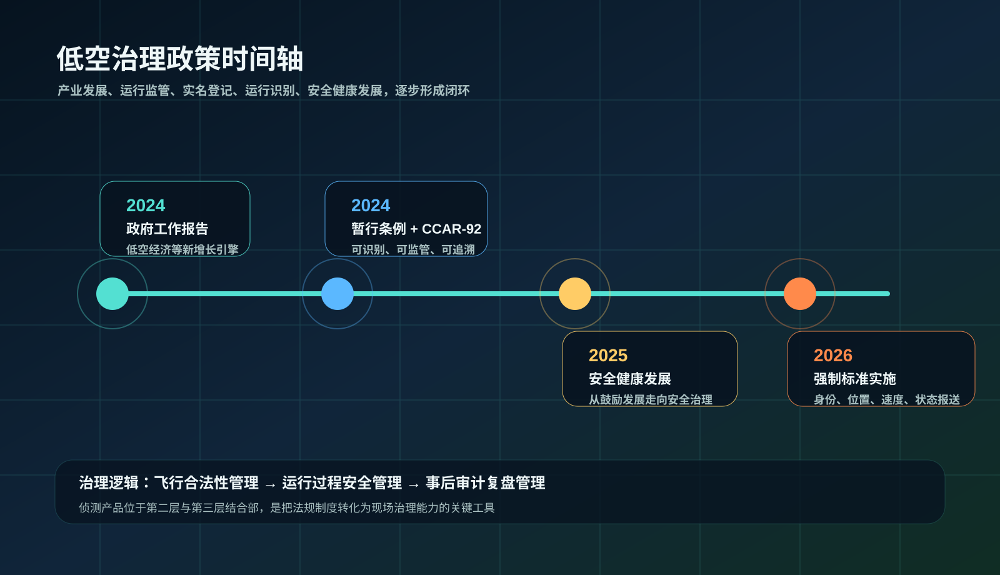
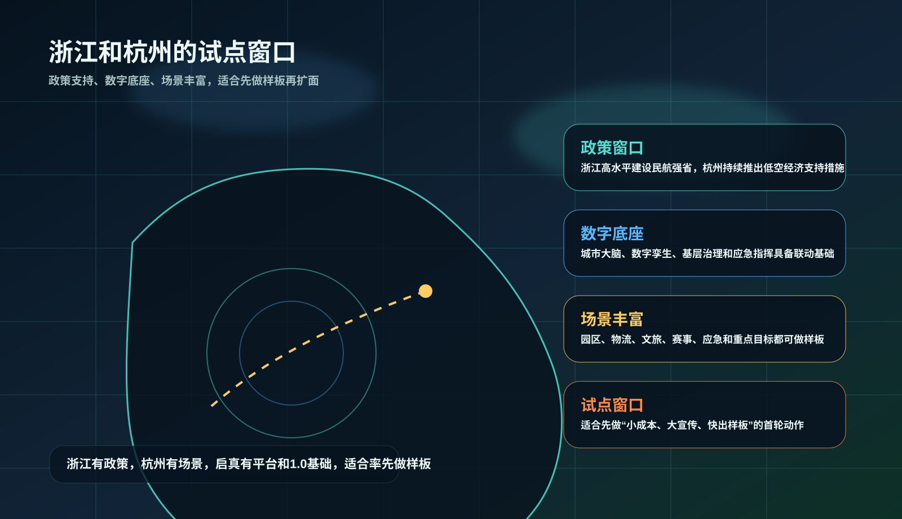
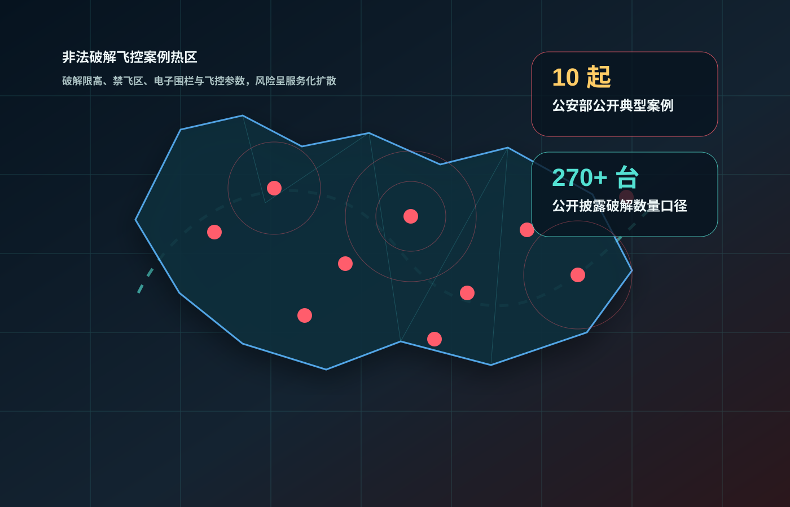
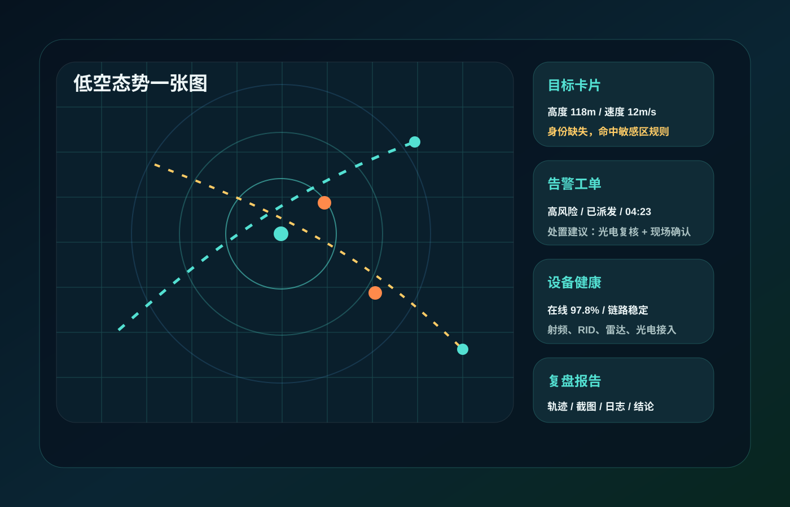

护天枢低空安全运营样板
基于现有平台与侦测1.0基础，先做出一个可展示、可运营、可复制的样板，再把能力复制到园区、活动、重点区域和城市治理。
低空经济不是只看“能不能飞”，而是先把“谁在飞、是否合规、风险多大、谁来处置”讲清楚。
这份PPT只讲一件事：为什么现在必须升级护天枢，为什么它值得从侦测1.0升级成低空安全运营样板。
217.7万2024年底全行业注册无人机规模
2666.7万2024年无人机全年累计飞行小时
2026.05两项强制性国家标准正式实施

低空经济正在从应用热，走向基础设施战

产业链低空经济已不只是无人机产业，而是把飞行器、空域、通信、平台、服务和治理组织成完整链条。
应用场景物流、巡检、应急、文旅、赛事、园区和城市治理都需要低空活动进入可管理状态。
基础设施未来竞争不只是设备参数，而是站网、平台、规则和运营能力能否一起落地。
数据价值飞行轨迹、告警事件、处置记录和复盘材料会沉淀为低空数字化经营资产。
政策推动2024年开始，国家层面对低空经济的表述从鼓励发展转向规模应用与安全健康发展并重。
行业成熟无人机规模增长已把“飞行能力”推到前台，把“治理能力”推成刚需。
启真机会已有平台基础，适合把侦测能力升级成可运营、可展示、可复制的样板产品。
低空治理正从“能飞起来”进入“可识别、可监管、可追溯”

飞行合法性实名登记、运行识别、飞行计划、空域审批和电子围栏，让“能不能飞”先有明确边界。
过程安全运行监视、风险识别、异常预警、跨部门联动和应急处置，让“飞的过程”可被管理。
事后复盘日志留存、证据链、责任追溯、统计报表和规则优化，让“出了事怎么办”也能被追踪。
侦测产品的位置它不只是设备，而是把制度要求转成现场治理动作的关键工具。
多源融合的必要性RID、无线电、雷达、光电、平台研判需要一起上，才能覆盖存量设备、改装设备和复杂环境。
未来的底层逻辑合规无人机会越来越可识别，但治理平台仍然要解决异常、遮挡、静默和越界场景。
浙江有政策，杭州有场景，试点窗口已经打开
政策支持浙江高水平建设民航强省，杭州也在持续推出低空经济高质量发展措施，试点并不缺政策窗口。
数字底座城市大脑、数字孪生、基层治理、应急指挥等基础能力已具备，适合把侦测接进现有体系。
场景丰富园区、物流、文旅、赛事、应急和重点目标都可形成样板，且更容易对外展示。
启真策略先做小成本样板，再把样板扩成园区版、活动版和城市版，不一开始就追求大而全。

先样板领导看的是“能不能先出一个拿得出手的案例”。
再复制客户看的是“能不能从一个点复制到多个场景”。
后运营公司看的是“样板能不能转成长期服务和持续收入”。
风险不只是飞过来，而是有人在帮它绕开规则

破解限高与禁飞禁飞区、限飞区、限高限制被破解后，合规边界被直接绕开。
篡改载重参数大型农用无人机等设备参数被改写后，会带来坠落和设施损坏风险。
关闭运行识别合规识别被关闭或被弱化后，单一RID能力会明显失效。
服务化牟利破解软件、破解服务、破解设备销售已经开始形成链条。
10起典型案例公安部公开披露的案例已经足够说明，低空治理不是未来问题，而是现实问题。
270余台口径公开披露的破解数量说明，风险具有规模性和可复制性。
启示侦测产品必须覆盖改装、破解、关闭识别和绕开电子围栏等异常目标。
侦测产品不是设备，而是低空安全运营的入口
公共安全它把低慢小目标从“看不见”变成“看得见、判得准、能留痕”，补强传统安防的低空短板。
产业运营它为物流、巡检、应急、文旅和园区开放提供安全底座，让低空应用更容易规模化。
公司战略它帮助启真从项目交付转向产品化运营，沉淀数据、规则、流程和样板。
合规闭环它把反制授权、处置流程和证据留痕统一纳入系统，减少越权和责任不清风险。

谁先把低空风险看见，谁就更容易掌握后续运营、数据和服务。
所以护天枢要做的，不是单点设备，而是把“看得见、判得准、派得出、留得住”真正跑成闭环。